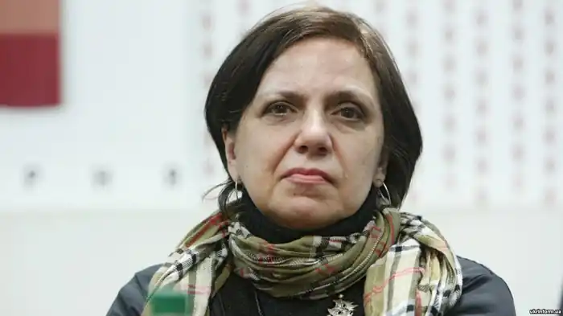
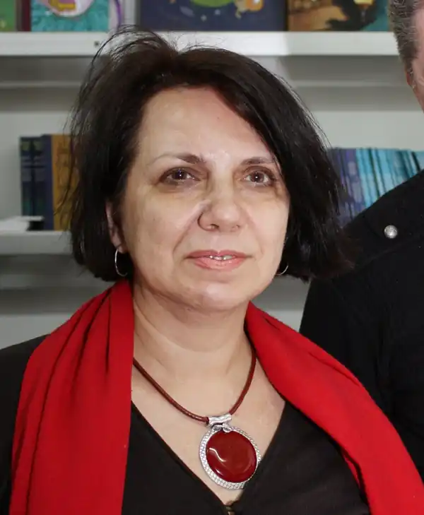

Євгенія Кононенко народилася 17 лютого 1959 року у м. Києві.
1981 року закінчила механіко-математичний факультет Київського державного університету ім. Т. Шевченка та французьку філологію Київського інституту іноземних мов 1994 р. Нині Кононенко мешкає в Києві, працює науковим співробітником Українського центру культурних досліджень. Є членом Національної спілки письменників України та Асоціації українських письменників. Євгенія Кононенко є автором низки новел та багатьох перекладів. Вона перекладає з французької та англійської мов. Переклади з французької поезії друкувались у "Березолі" (1992 — Ч. 3-4), "Всесвіті" (1995 — Ч. 2) та інших виданнях. За переклад антології французького сонета стала лауреатом премії ім. М. Зерова Французької Амбасади (1993). Лауреат міжнародного конкурсу "Гранослов" за книгу "Вальс першого снігу", премії журналу "Сучасність" за роман "Імітація". Розлучена, виховує дочку та сина. У творчому доробку Євгенії Кононенко поезії, оповідання та есеї, повісті та романи, кілька дитячих книжок, ряд культурологічних розвідок з тем популярної культури та гендерних питань і журналістські статті. Але найбільше визнання Євгенія Кононенко отримала за свою коротку прозу: книжки її оповідань, новел та есеїв постійно додруковуються в Україні, перекладаються за кордоном і є темою наукових досліджень в Україні та за її межами. Сьогодні твори Євгенії Кононенко вже перекладено та опубліковано українською, англійською, німецькою, французькою, хорватською, фінською, чеською, російською, польською, білоруською та японською мовами. Зокрема, Євгенія Кононенко є автором: • повісті "Сестра" (1996) • поетичної збірки "Вальс першого снігу" (1997) • книги оповідань "Колосальний сюжет" (1998) • дитячої книги "Інфантазії: За мотивами поезій Клода Руа" (2009) • роману "Імітація" ( 2001, 2008; аудіокнига, 2007) • роману "Зрада. ZRADA made in Ukraine" (2002) • роману "Ностальгія" (2005, 2006, 2008) • роману "Жертва забутого майстра" ( 2007) • дитячої книги "Неля, яка ходить по стелі" ( 2008) • збірки новел "Без мужика" (2005, 2006, 2008) • збірки новел "Повії теж виходять заміж" ( 2005, 2006; 2007) • збірки новел "Новели для нецілованих дівчат" ( 2006, 2009) • збірки новел та есеїв "Книгарня "ШОК"" (2009, 2010) • підліткової книжки "Бабусі теж були дівчатами" (2010) • роман "Російський сюжет" (, 2012) Новели Євгенії Кононенко включено до ряду збірок, зокрема до антологій "Тексти", 1995; "Квіти у темній кімнаті", 1997; "Три світи", 2007. Поетичні та прозові твори публікувалися у багатьох часописах ("Березіль", "Сучасність" "Кур'єр Кривбасу", "Літературна Україна", "Критика" тощо). Прозові твори Євгенії Кононенко перекладені англійською ("From Three Worlds" (1996: оповідання "Три світи", назва якого трансформувалася у назву антології), "Two Lands, New Visions" (1998: оповідання "Елегія про старість"), німецькою ("Die Kurbisfurstin" (2000: оповідання "На ліву ногу", надруковане під назвою "Ein verhexter Tag"), французькою (оповідання "Три світи", надруковане під назвою "Elegie Kievienne" у часописі "Diagonales. Est-Ouest", 1999: новела "Втрачені стіни"), хорватською (оповідання "Нові колготи", опубліковане у журналі "Коїо", 2000), фінською (фрагмент есею "Без мужика", часопис "Kaltio" N1, 2006), чеською (новела "Драні колготи", антологія "Еxpres Ukrajina", Книга Злін, 2008) російською (оповідання "Півтора Григорюка", "Колосальний сюжет", опубліковані в журналі: "Дружба Народов", 2008, №3; збірка новел "Без мужика", Флюїд, 2009), польською (часопис "Portret", 2009), білоруською та японською мовами, англійською "Російський сюжет", Глагослав, 2013. Євгенія Кононенко також перекладає з французької та англійської мов поезію, прозу та науково-популярну літературу. Зокрема, в її перекладах виходили: "Мала антологія французького сонету", Клод Руа "На захист крокодилів", Еміль Нелліган "Макабричний бенкет", Елі Візіль "Світанок", Жерар де Вільє "Убити Ющенка", Ані Ерно "Пристрасть", Венера Курі-гата "Полонянки мису Тенеф", Луї Дюмона "Есе про індивідуалізм", твори Даніели Стіл, Анни Гавальди, Барбері Мюріель тощо. Учасник багатьох міжнародних літературних, культурологічних і наукових форумів, зокрема: фестиваль української культури (Ді, Франція) Форум видавців у Львові (Львів, Україна) International Writing Program (Університет штату Айова, США) круглий стіл щодо проблем сучасної культури, зорганізований часописом "Przekroj" (Варшава, Польща) учасник Lahti International Writers' Reunion 2005 (Лахті, Фінляндія) симпозіум "Пострадянський дискурс російської культури" (Тарту, Естонія) 4-й Московський міжнародний відкритий книжковий фестиваль (Москва, Росія) 3-й Міжнародний фестиваль сучасного мистецтва ГогольFest тощо Відзнаки: лауреат спільної премії імені Миколи Зерова Міністерства культури України і посольства Франції лауреат літературної премії "Гранослов" лауреат Всеукраїнського рейтингу "Книжка року" лауреат Всеукраїнського конкурсу романів, кіносценаріїв і п'єс "Коронація слова" лауреат премії часопису "Сучасність" лауреат літературної премії часопису "Березіль" переможець Другого всеукраїнського конкурсу радіоп’єс "Відродимо забутий жанр" Національної радіокомпанії України переможець всеукраїнського конкурсу оповідання на київську тематику "З Києва з любов’ю" перша премія міжнародного літературного фестивалю "Просто так" Володіння мовами: українська (рідна), російська (вільно), англійська (вільно), французька (вільно), польська (базовий рівень). Член НСПУ з 1997 року. Твори Бабусі також були дівчатками: повість, 2010, Два билета в оперу: [рассказ] 2011, Неля сходить зі стелі: [повість] 2009, Неля, яка ходить по стелі: [повість] 2007, Перший: хронологія кохання 2012, Тягар корони. На своїй землі: [оповідання] 2008.